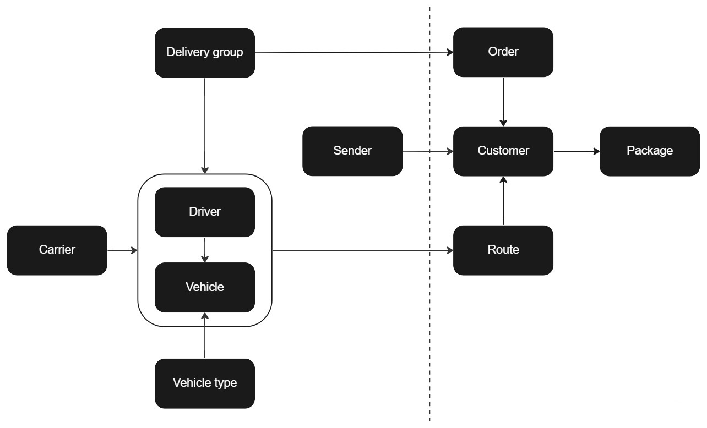

API-documentation
API (Application Programming Interface) documentation is a set of information and instructions that explain how to effectively use and integrate an API into a software application. It is an important tool for developers as it helps them understand the capabilities and limitations of the API, as well as how to properly make requests and handle responses.
API documentation typically includes information such as the endpoint URL, the types of requests that can be made (e.g. GET, POST, PUT, DELETE), the format of the data that is expected in requests and responses, and any authentication or authorization requirements. It may also include code examples, tutorials, and best practices for using the API.
pinDeliver
pinDeliver is a technology-driven logistics company that provides on-demand delivery and transportation services to businesses and consumers. It operates as a platform that connects businesses with a network of delivery drivers. pinDeliver provides businesses with tools to manage their delivery operations, track shipments, and communicate with customers. Some of its services include same-day delivery, scheduled delivery, and long-distance delivery. The company also provides real-time tracking and delivery updates, allowing businesses and customers to monitor the progress of their shipments. pinDeliver operates in multiple countries and provides delivery services across various industries, including retail, e-commerce, food and beverage, and more. The company's mission is to make delivery operations more efficient, cost-effective, and customer-friendly.
pinDeliver's last mile delivery service is designed to streamline the whole leg of the delivery journey, from the transportation hub to the recipient's doorstep. It leverages technology to optimize delivery routes and ensure timely and efficient delivery. pinDeliver's last mile delivery service is customizable, allowing businesses to choose the delivery options that best meet their needs, such as same-day delivery, scheduled delivery, or real-time delivery updates.
pinDeliver's next generation Transportation Management System (TMS) is a cloud-based platform that provides businesses with real-time visibility into their delivery operations. It includes features such as route optimization, delivery tracking, and delivery management, among others. The TMS integrates with other systems, such as warehouse management and order management, to provide businesses with a comprehensive view of their delivery operations. The goal of pinDeliver's TMS is to make delivery operations more efficient, reduce costs, and improve customer satisfaction.
Workflow
The requests for sender and carrier are completely optional to create. There are already existing senders you can use when adding a customer order. Carrier can be used when creating a vehicle but it is not essential to make a vehicle work. The request for vehicle type works in a similar way. It is optional to create and can be connected to a vehicle but it is not necessary to create it to make a vehicle work.
The other three requests on the left side, delivery group, driver and vehicle are non-optional but you still only need to create them one time. Once these three, and eventually sender, carrier and vehicle type, are created you don't need to use those requests anymore if you don't want to. If you want to you can connect the driver to one or more vehicles but that is completely optional.
The four requests one the right side of the chart below; routing order, customer order, package and route are requests that can be iterated for as many times as you need them.
A reasonable way to use our API-requests would be to start with, if you plan on using it, setting up a carrier. Then continue with creating x amount of delivery groups, drivers and vehicles. After a vehicle is created you can proceed with creating a vehicle type and connect it to the vehicle. Once a delivery group is created you can proceed with adding a routing order followed by a customer order with packages and eventually a sender in the same request.
